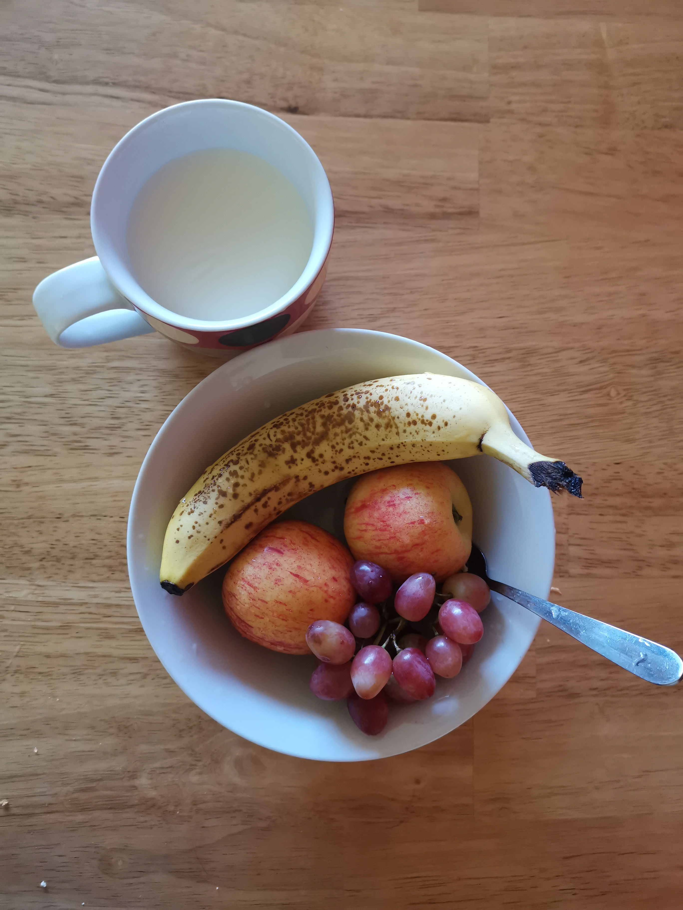
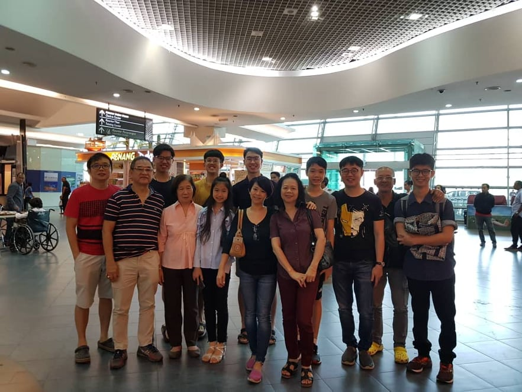

Prologue Part One: A Long And Winding Road
Through the days where I have missed home more, I realized that I doubtlessly should be, for there are more luxuries back when my world was small and full. Are, not were, as those gifts of life are still waiting up ahead on this road I'm on. With my favourite songs in my head, Road Goes Ever On, Rocketman and Yesterday, I made a few many of my own, and tunes and themes too, for my story, all to keep my mind on the road, to keep me from swerving off, I think. I am a screwed-up, yet I know I have gotten better through what I have done during my first thirty and more days in the away so far from where home stays. I am in the student choir, I jog fairly well, I have good friends and am able to socialize above-averagely with many people around me, I enjoy my classes and can be able to stay ahead of my peers with enough time of mind to even commit some effort to teaching tuition to a fellow classmate. All of these, though I do still have much that are messes yet to be settled, like my room and my luggage, like my laundry routine and my shower rituals, like much and more, it's constantly overbearing, making me decide to procrastinate on contemplating these matters.
Of course, there is no gainsay that I myself know I've grown, and I'm actally proud of my current rate of progress, though Otherworldly is still two chapters away from being completed. I have done much more than what I expected myself to, and I guess that's something to invest some pride on.
 I think this is a fantastic picture, where the sword of the evening pierced the greens of Ireland, bringing to me the same light that shone on my home a few hours prior. But I'm in Galway now, and so I must wait, for the Road goes ever ever on, on and on, and on and on.
I think this is a fantastic picture, where the sword of the evening pierced the greens of Ireland, bringing to me the same light that shone on my home a few hours prior. But I'm in Galway now, and so I must wait, for the Road goes ever ever on, on and on, and on and on.
 This was the part of that long day which I enjoyed the most. It was here that I decided to compose my own folk songs and tunes for My World. The music was the night, and my mind was along with the instruments, my right foot carrying the beat. It was marvellous, through the thoughts of the awaiting shower ritual in my head then, it was truly marvellous.
This was the part of that long day which I enjoyed the most. It was here that I decided to compose my own folk songs and tunes for My World. The music was the night, and my mind was along with the instruments, my right foot carrying the beat. It was marvellous, through the thoughts of the awaiting shower ritual in my head then, it was truly marvellous.

One of my first few meals in Galway, when I was still alone in the house with all the space mine alone to use. It was so long ago, and feels like so too, yet it also seems to me that this picture could have been taken just yesterday. Time is ever the waterfall over a sky-piercing cliff.
 The most important of this entry, with the very luxuries I mentioned in an endless recall ringing in my head. It must be a daily routine, to keep home close though in reality it's still far away, in time as well as in space.